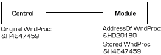
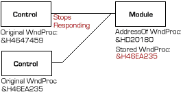

VB5 Graduated Title Bar Sample (44K)
VB5 Graduated Title Bar Sample (44K)
 VB5 Minimum Form Size Demonstration (9K)
VB5 Minimum Form Size Demonstration (9K)
 VB5 SSubTmr Binary (11K)
VB5 SSubTmr Binary (11K)
 VB5 SSubTmr Source Code (34K)
VB5 SSubTmr Source Code (34K)
 VB6 Graduated Title Bar Sample (38K)
VB6 Graduated Title Bar Sample (38K)
 VB6 Minimum Form Size Demonstration (8K)
VB6 Minimum Form Size Demonstration (8K)
 VB6 SSubTmr Binary (11K)
VB6 SSubTmr Binary (11K)
 VB6 SSubTmr Source Code (41K)
VB6 SSubTmr Source Code (41K)
 Bugs: 0 / 0
Bugs: 0 / 0
 Issues: 1 / 1
Issues: 1 / 1
 Questions: 0 / 0
Questions: 0 / 0
 26 Jan 2003
26 Jan 2003
Fixed problem with multiple attach/detach calls, and added automatic detach for the WM_DESTROY message.
Refactored code for clarity.

Subclassing Without The Crashes
Add stable and reliable multi-object subclasses to your project.
Prior to VB5, it was impossible to subclass a control without relying on a proprietary custom control. This greatly restricted what you could do if you wanted to play around with some of the neater customisation features - creating a new control was completely out, finding out in detail what was going on with menus was impossible and so on.
The introduction of the AddressOf operator to VB5 now allows you to subclass, although it is not nearly as simple as it ought to be.
The SSubTmr component is a more stable and consistent way of working with subclassing, without some of the attendent difficulties. You can either use it as an external DLL to provide, or by including one module and one interface class, you can compile it directly into your application once you are happy the subclassing is working. SSubTmr is the basis for most of the VB controls on this site.
The component itself mostly uses the SubTimer.DLL component code from Bruce McKinney's excellent "Hardcore Visual Basic" book, however it has a couple of very useful enhancements described in this article.
The Problem With Subclassing
If you develop ActiveX controls and intend to subclass or hook a window, you'll very quickly discover that doing it is not at all straightforward. A typical problem is that a control which works fine when there is a single instance on a form suddenly stops working or starts GPFing when you place two instances on the form. Why is this happening?
The AddressOf operator requires you to place the callback routine in a module (and most annoying this is too!). This module is shared between all instances of your control and therefore the variables and subroutines contained by that module are also shared.
To visualise the situation, consider a control which wants to know if its parent has changed size. To do this, you create a callback routine in a module to handle the WndProc callback. Then, you want to add this callback routine to the parent's window handle so you will be routed all the parent's messages. To add the callback, you change the parent's GWL_WNDPROC Window Long to the address of your WndProc function. This function returns a pointer to the previously installed WndProc function, which you must be sure to forward all messages to that you aren't fully handling yourself (otherwise you quickly find your control will do nothing or, more likely, prevent its container from doing anything!). When you remove an instance of your control, you need to put the old WndProc back again.
The following diagrams show how easy it is to end up with one control not functioning in this circumstance, because of the sharing of variables in the module:
With One Instance of Your Control
With Two Instances
You can correct this problem by storing a separate WndProc for each control instance that gets created. However, there is now a much more difficult problem to solve - how to make sure your control terminates correctly.
The WndProc function in the module receives all the messages, but you need to pass this information on to your UserControl for the object to do anything about the messages. Therefore the module needs to know about the instance of the control it wants to inform about the message. Since the module is shared between all instances of the UserControl in question, it will need to know which hWnd is associated with which UserControl instance, and also needs to be sure it only installs the WindowProc function for the same hWnd once.
You might think you can get around this by storing an array of references to UserControls in your WindowProc handler message, and when you receive a message, you then enumerate through your array and inform each item in turn. I tried this and there is a big downside. If your module holds a reference to any UserControl instance, it will not allow the UserControl object to be released until VB figures out that the reference has gone out of scope or if you set the object to nothing. However, unless you can arrange for the user of the control to call a method before the UserControl is destroyed, it is impossible for the reference to go out of scope!
Often the user of the control will forget to call this method, or will press the Stop button in VB IDE, or call End, the consequences being:
- The UserControl_Terminate event never fires (this only fires when there are no references to the UserControl instance)
- .. Hence the UserControl never stops running
- .... And so you never remove the WindowProc, which suddenly stops being valid because the container no longer exists....
This is a very quick way to get a big and nasty GPF. Worse, this sort of thing sometimes works in design mode, but then when you build the OCX version all of a sudden you are getting 'Control.OCX referenced memory at 2x4500E000. The memory could not be "read"'...
Fixing It - Slimy Hacks and Neat Tips
Two things you need to fix these problems are:
- Don't Store Direct References to Objects - Use a Slimy Hack Instead!
- Use Window's built in database to store information against hWnds
These are now described in turn.
Don't Store Direct References to Objects - Use a Slimy Hack Instead!
Whenever you store a reference to an object in VB, VB increments it's COM reference count for you. This is great in the sense that it allows you not to worry about objects being invalid when you call them. However, its a massive pain if you have two objects which reference each other, because the COM reference count can never go down to zero unless you can figure a way to manually inform one or the other objects that they should terminate. Luckily there is a great hack to work around this.
Instead you store a long pointer to an object. This allows you to get an object reference, but prevents the object's reference count being incremented. Obviously this will lead you into difficulties if the object goes out of scope before you make a call to the object being pointed to (GPF...) but when used carefully this is a great technique. Here is how you do it:
' All credit for this code to Bruce McKinney:
Declare Sub CopyMemory Lib "kernel32" Alias "RtlMoveMemory" ( _
lpvDest As Any, lpvSource As Any, ByVal cbCopy As Long)
Private Property Get ObjectFromPtr(ByVal lPtr As Long) As Object
Dim oThis As Object
' Turn the pointer into an illegal, uncounted interface
CopyMemory oThis, lPtr, 4
' Do NOT hit the End button here! You will crash!
' Assign to legal reference
Set ObjectFromPtr = oThis
' Still do NOT hit the End button here! You will still crash!
' Destroy the illegal reference
CopyMemory oThis, 0&, 4
' OK, hit the End button if you must--you'll probably still crash,
' but this will be your code rather than the uncounted reference!
End Property
Private Property Get PtrFromObject(ByRef oThis As Object) As Long
' Return the pointer to this object:
PtrFromObject = ObjPtr(oThis)
End Property
That gives the general picture of how to do it. You can improve matters by typing the variables of type Object to suit your particular application.
Use Window's built in database to store information against a hWnd
This is an excellent feature. Windows has functions which allow you to store as many long values as you want against a named field for a given hWnd. Here are the functions:
Declare Function GetProp Lib "user32" Alias "GetPropA" _
(ByVal hwnd As Long, ByVal lpString As String) As Long
Declare Function SetProp Lib "user32" Alias "SetPropA" _
(ByVal hwnd As Long, ByVal lpString As String, ByVal hData As Long) As Long
Declare Function RemoveProp Lib "user32" Alias "RemovePropA" _
(ByVal hwnd As Long, ByVal lpString As String) As Long
You use them like this:
' To set a property called 'NumberOfInstances' to 3 for a form: SetProp Me.hWnd, "NumberOfInstances", 3 ' To get the 'NumberOfInstances' value: lNumber = GetProp(Me.hWnd, "NumberOfInstances") ' To delete the property when finished with it ' (Windows does this automatically when the application is ended): RemoveProp Me.hWnd, "NumberOfInstances"
You can use these functions to store as much information as you want against a given hWnd, and this is a perfect place to store pointers to objects which your subclassed window proc is going to call to, not to mention the old window proc value.
SSubTmr Implementation
SSubTmr implements these techniques to produce a stable subclasser which you can use regardless of how many instances you have and how many controls want to attempt to subclass the same hWnd. The implementation is very similar to the SubTimer component from Hardcore Visual Basic, but with some improvements.
The subclassing consists of three parts:
- A bas module (subclass.bas) which contains the logic to associate object pointers with window handles, and manage the adding and removing of the subclassed proc.
- An Interface, ISubClass.bas, defining the properties and methods which an object must support in order to take part in subclassing with subclass.bas. To ensure all these interfaces are present, subclass.bas will not accept any object which doesn't implement this interface.
- A global class (GSubClass.Cls) which exposes functions to initiate and control the subclassing procedure.
For reference, here are the window properties SSUBTMR uses to manage the subclassing process:
C[hWnd]
Stores the number of instances using the subclass. When the property is 0 and you add to the subclass, it installs the WindowProc. Subsequent additions just increment the counter and use the existing WindowProc. When items are removed, the count is decremented, until it gets to zero, when the WindowProc is removed again.
[hWnd]#[Message]C
The count of how many times the message [Message] is attached to the hWnd [hWnd]. This allows you to subclass the same message on the same hWnd more than once. For example, if a control wants to subclass it's parent, and you place two controls on the same parent, you need both controls to be able to receive that message.
[hWnd]#[Message]#[Number]
Stores a pointer to the object which wants to receive notification for the hWnd/Message combination.
Differences between SSUBTMR and the Hardcore Visual Basic version
There are five main differences between this component and the one provided with Hardcore Visual Basic:
- Ability to subclass the same message for the same Window handle more than once
This allows you to produce controls which intercept the same message on the parent window handle. Note that there was a problem with this in the first release that is now fixed. - Response to messages is configurable on a message by message basis
In the original SubTimer component you could specify which type of message response you wanted, but if you wanted to Pre-process some messages but Post-Process others you couldn't. This occurs because when the message response property is queried you don't know what the message it's querying for. This is resolved by the addition of a new CurrentMessage property which you can query in the MsgResponse event. - You can change the wParam and lParam values when you return
In SubTimer, wParam and lParam are passed ByVal so you can't change them. Some window procedures ask you to modify the wParam and lParam (drawing a customised title bar is one of these) when you return. This is resolved by adding a new CallOldWindowProc method. Set the message response to emrConsume to eat the message, and then use this call to send your new wParam and lParam values to the calling WindowProc. - Reduction in modules
To aid compiling SSubTmr directly into an EXE rather than using the DLL, the code has been moved around so the declares are localised to the modules that need them. To incorporate subclassing support into a project, just copy Subclass.bas and ISubClass.cls into your module and remove the reference to the SSubTmr.DLL component. (Warning: Don't do this until you've finished debugging, otherwise debugging can get to be seriously hard.) - Sorry, there isn't a fifth one.
Quick Start - How to Use SSUBTMR
To quickly get started with subclassing, here is a simple example which demonstrates how to prevent a form from being resized smaller than a certain width and height. This is also available in the demonstration project download.
Step 1
Create a new Standard EXE project.
Step 2
Add a reference to SSubTmr.DLL. This appears in the references list as 'Subclassing and Timer Assistant (with configurable message response, multi-control support + timer bug fix)'
Step 3
Implement the Subclassing interface:
In the declarations section, add the following code:
Implements ISubClass
Make sure that the required interfaces are supported under the ISubClass section:
Private Property Let ISubClass_MsgResponse(ByVal RHS As EMsgResponse)
' This Property Let is not really needed!
End Property
Private Property Get ISubClass_MsgResponse() As EMsgResponse
' This will tell you which message you are responding to:
Debug.Print CurrentMessage
' Tell the subclasser what to do for this message (here we do all processing):
ISubClass_MsgResponse = emrConsume
End Property
Private Function ISubClass_WindowProc( _
ByVal hWnd As Long, ByVal iMsg As Long, ByVal wParam As Long, ByVal lParam As Long _
) As Long
Debug.Print "Got Message"
End Function
Step 4
Now you have a template for all subclassing projects, here is the code you need to prevent form resizing smaller than a certain size:
Declarations:
Private Declare Sub CopyMemory Lib "kernel32" Alias "RtlMoveMemory" ( _
lpvDest As Any, lpvSource As Any, ByVal cbCopy As Long)
Private Type POINTAPI
x As Long
y As Long
End Type
Private Type MINMAXINFO
ptReserved As POINTAPI
ptMaxSize As POINTAPI
ptMaxPosition As POINTAPI
ptMinTrackSize As POINTAPI
ptMaxTrackSize As POINTAPI
End Type
Private Const WM_GETMINMAXINFO = &H24
To start and stop subclassing:
Private Sub Form_Load()
AttachMessage Me, Me.hwnd, WM_GETMINMAXINFO
End Sub
Private Sub Form_QueryUnload(Cancel As Integer, UnloadMode As Integer)
DetachMessage Me, Me.hwnd, WM_GETMINMAXINFO
End Sub
The code to handle the WM_GETMINMAXINFO message:
Private Function ISubclass_WindowProc( _
ByVal hwnd As Long, ByVal iMsg As Long, _
ByVal wParam As Long, ByVal lParam As Long) As Long
Dim mmiT As MINMAXINFO
' Copy parameter to local variable for processing
CopyMemory mmiT, ByVal lParam, LenB(mmiT)
' Minimium width and height for sizing
mmiT.ptMinTrackSize.x = 128
mmiT.ptMinTrackSize.y = 128
' Copy modified results back to parameter
CopyMemory ByVal lParam, mmiT, LenB(mmiT)
End Function
Another sample included in the demonstration shows how to create Windows graduated title bar effects like those in the image below: